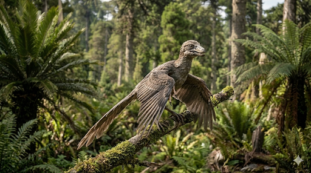

ארכאופטריקס
The Ancient Wing: Archaeopteryx lithographica

תיק מחקר: נתונים אבולוציוניים משולבים
תקופת פעילות
לפני כ-150 מיליון שנה
תור היורה המאוחר (גיל הטיטוני). חי בארכיפלג איים קטן באירופה.
מסה ומשקל
800 גרם עד 1 ק"ג
קל משקל כעורב מודרני, מותאם היטב לטיפוס ודאייה בין העצים.
ממדים (אורך ומוטת כנפיים)
אורך כ-50 ס"מ
מוטת כנפיים הגיעה גם היא לכ-50 ס"מ, הודות לנוצות ארוכות ואסימטריות.
מיקום גיאוגרפי
דרום גרמניה (בוואריה)
נמצא בלעדית בתצורת אבן הגיר המפורסמת של זולהופן (Solnhofen limestone).
סיווג טקסונומי קריטי
תרופוד מנוצה / עוף קדום (Theropoda / Avialae)
יצור מעבר (Transitional fossil). בעל תכונות זוחל קלאסיות (שיניים, זנב ארוך גרמי, טפרים בידיים) המשלבות תכונות עוף מתקדמות (נוצות טיסה אסימטריות, עצם בריח מחוברת ליצירת "עצם משאלה").
01 // ניתוח אטימולוגי נרחב
| החלק בשם | שפת מקור | פירוש ומשמעות היסטורית |
|---|---|---|
| Archaeo- | יוונית עתיקה (ἀρχαῖος / archaios) | עתיק / קדום (Ancient) השם הוענק ב-1861 על ידי הפלאונטולוג הגרמני הרמן פון מאייר (Hermann von Meyer), בעקבות גילוי של נוצה בודדת מאובנת שקבעה את קיומו של עוף קדום מאוד ביורה. |
| -pteryx | יוונית עתיקה (πτέρυξ / pteryx) | כנף / נוצה (Wing/Feather) סיומת קלאסית לעופות פרהיסטוריים או לדינוזאורים מנוצים. השם המלא: **"הכנף העתיקה"**. |
| lithographica | לטינית (lithographus) | אבן דפוס (Lithographic stone) הוענק בעקבות סוג הסלע שבו נמצא המאובן - אבן הגיר של זולהופן (Solnhofen limestone) בבוואריה, ששימשה באופן היסטורי לתעשיית הדפוס הליטוגרפי בזכות המרקם החלק להפליא שלה, אשר שימר במדויק את רישומי הנוצות העדינות. |
02 // תולדות הגילוי: מתנת השמיים של דרווין והמאובן שקנה פרה
תזמון קוסמי: שנתיים לאחר "מוצא המינים"
בשנת 1859, צ'ארלס דרווין פרסם את ספרו פורץ הדרך "על מוצא המינים". הביקורת המרכזית כלפיו הייתה: "אם קבוצות התפתחו אחת מהשנייה, היכן החוליות החסרות במאובנים?". התשובה הגיעה ב-1861 מגרמניה. פועלים במחצבת אבן הגיר בזולהופן גילו שלד קטן של יצור חצי זוחל וחצי עוף, כשנוצותיו חקוקות בסלע. דרווין עצמו ציין במהדורה הבאה של ספרו כי גילוי הארכאופטריקס הוא הראיה המוחשית ביותר לאמיתות התיאוריה שלו.
נסיבות הגילוי בסלע הליטוגרפי
ביורה המאוחרת, דרום גרמניה הייתה ארכיפלג של איים טרופיים שהקיפו לגונות חמות ומלוחות מאוד (Anoxic - דלות בחמצן), מה שמנע מאוכלי נבלות לחיות בקרקעיתן. כשארכאופטריקס מת ונפל למים, בוץ סידני דק מאוד כיסה אותו במהירות. הבוץ הזה, שהפך לאבן גיר ליטוגרפית עדינה, יצר "צילום" מושלם של הנוצות, דבר שלא קורה באבן חול רגילה.
הדוגמה של ברלין (1874): גילוי מרהיב במחיר של פרה
עד היום נמצאו רק 12 שלדים מזוהים של ארכאופטריקס, כולם מאזור זולהופן בגרמניה. המאובן המפורסם ביותר מביניהם, המוכר מכל ספרי המדע והביולוגיה בעולם, הוא "הדוגמה של ברלין". נסיבות גילויו מדהימות לא פחות מהמאובן עצמו:
- זהות המגלה והמיקום: המאובן התגלה בשנת 1874 על ידי חקלאי ופועל מחצבה בשם **יאקוב נימאייר** (Jakob Niemeyer). הגילוי התרחש במחצבת בלומנברג (Blumenberg) הסמוכה לעיירה אייכשטט (Eichstätt) שבדרום גרמניה.
- הטעות והמכירה (נסיבות הגילוי): נימאייר עבד בחציבת אבני גיר לתעשיית הדפוס כשהבחין בעצמות. בהיותו פועל פשוט, הוא לא הבין כלל את חשיבותו המדעית ההיסטורית של הממצא. הוא חיפש דרך מהירה להרוויח מעט כסף, ולכן מכר את אבן הגיר הכבדה לבעל פונדק מקומי (שהיה גם הבעלים של המחצבה) בשם יוהאן דור (Johann Dörr). התמורה? סכום זעום ששימש את נימאייר **לקניית פרה!**
- ההכנה והתהילה המדעית: דור, בעל הפונדק, מכר את האבן לאספן מקומי מיומן בשם ארנסט הברליין (Ernst Häberlein). הברליין ביצע עבודת חציבה וניקוי זהירה ועדינה ביותר של האבן במשך חודשים. רק בתום הניקוי, נחשף הפלא במלואו: שלד מושלם הכולל רישומי נוצות מרהיבים, והחשוב מכל - **גולגולת שלמה** שפיה מלא בשיניים קטנות וחדות של זוחל! זהו השלד שהכריע סופית כי מדובר בשילוב עופות-זוחלים.
- הצלה לאומית: הברליין דרש סכום עתק עבור המאובן המושלם (שעמד להימכר למוזיאון בחו"ל). בסופו של דבר, איש העסקים והתעשיין הגרמני ורנר פון סימנס (Werner von Siemens) התערב, קנה את המאובן מכיסו הפרטי כדי להשאירו בגרמניה, והעביר אותו למוזיאון הטבע בברלין (Humboldt Museum), שם הוא מהווה את אחת מתצוגות המדע החשובות בעולם עד היום.
אקולוגיה וביומכניקה: על קו התפר שבין שמיים וארץ
מכיוון שהאיים שבהם חי היו נטולי עצים גבוהים (שכן היערות הגדולים היו ביבשת עצמה), מאמינים שהוא התגורר בשיחים גבוהים ובסבך הקרוב ללגונות.
תזונה (Diet) ואורח חיים
הארכאופטריקס היה טורף זעיר (Carnivore/Insectivore). הלסת הקטנה שלו, המצוידת בעשרות שיניים חדות ופונות לאחור (כמו של דינוזאור טיפוסי), מעידה שהוא ניזון מחרקים, זוחלים קטנים, ואולי דגים זעירים או סרטנים שנסחפו ללגונות.
הטפרים החדים שלו, שבלטו מתוך כנפיו (שלוש אצבעות נפרדות עם טופר בכל כנף!), היו שימושיים מאוד לאחיזה בטרף מחליק, וכן לעזרה בטיפוס מהיר על גזעי עצים ושיחים כשהיה מותקף.
ביומכניקה: האם הוא באמת עף?
השאלה הגדולה סביב הארכאופטריקס היא האם הוא היה מעופף פעיל (כמו יונה) או רק דואה (כמו סנאי מעופף).
**רמזים לטיסה:** הנוצות שלו היו **אסימטריות**, בדיוק כמו אלו של ציפורים מודרניות, צורה שיוצרת עילוי (Lift) מבחינה אווירודינמית. הוא גם פיתח "עצם משאלה" (Furcula) מחיבור שתי עצמות הבריח שלו, המשמשת בעופות לאחסון אנרגיה אלסטית במהלך משק הכנפיים.
**מגבלות הטיסה:** לעומת זאת, חסרה לו עצם ה"קרינה" (Keel) במרכז החזה, שהיא העוגן המרכזי לשרירי הטיסה המאסיביים בעופות מודרניים. מודלים ביומכניים עדכניים מראים שהוא היה מסוגל ל**תעופה פעילה מסוימת (Powered flight)**, אך לא להמראה מהמקום. הוא היה צריך להתחיל את הטיסה בריצה, בקפיצה מענף או בדאייה, ולא היה מסוגל לטוס למרחקים ארוכים.